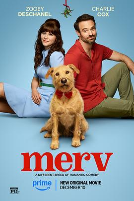

爱犬莫福 / Merv
又名：梅尔夫
译名其实可以更好听些。开篇的长镜头技术力还蛮高的。人类果然不能失去狗狗啊，就是剧情倘使能精简至一小时半里就好了。btw，导演的歌品还是不错的。
作品信息
| 导演 | 杰西卡·斯维尔 |
| 编剧 | 丹·克拉克 / 琳赛·斯图尔特 |
| 主演 | 查理·考克斯 / 佐伊·丹斯切尔 / 埃莉·詹姆森 / 帕翠西亚·希顿 / 大卫·亨特 / 克里斯·里德 / 贾思敏·马修斯 / 维多利亚·布雷德 / 维恩·埃维雷特 / 杰森·伯基 / 杰克·伯恩 / 乔丹·考克斯 / 安德烈埃·莱恩 / 南茜·蒂科汀 / 凯莉·蒂彭斯 / 米歇尔·谢弗 / 凯文·帕特里克·墨菲 / 乔伊·斯洛特尼克 / 迈琪娅·迈尔斯 / 塞琳娜·阿塞维多 |
| 类型 | 喜剧 |
| 制片国家/地区 | 美国 |
| 语言 | 英语 |
| 上映日期 | 2025-12-10(美国网络) |
| 片长 | 106分钟 |
| IMDb | tt31281659 |
说过什么
2026-05-19 22:16:58
广播 · 看过 · ★★★☆☆
译名其实可以更好听些。开篇的长镜头技术力还蛮高的。人类果然不能失去狗狗啊，就是剧情倘使能精简至一小时半里就好。btw，导演的歌品还是不错的。
最后一次看到是 2026-10-07T23:12:45+08:00 · 豆瓣原页